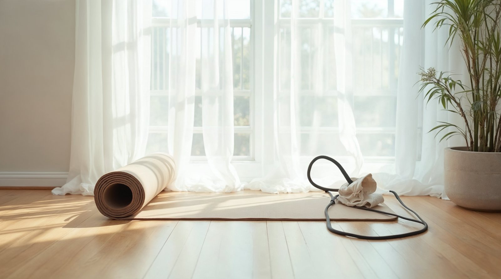
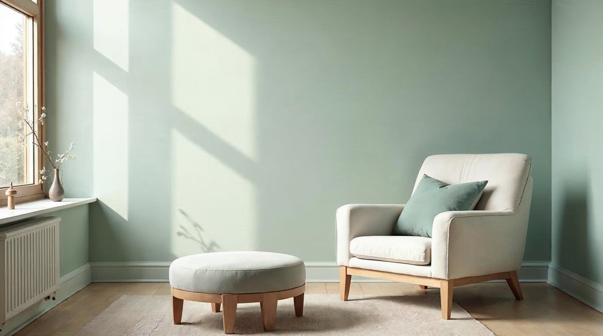
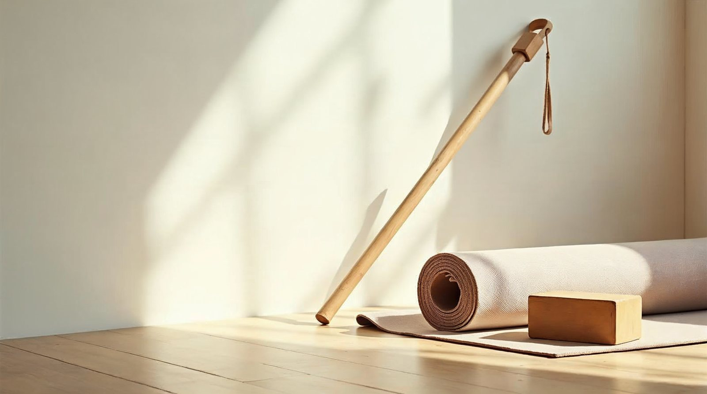
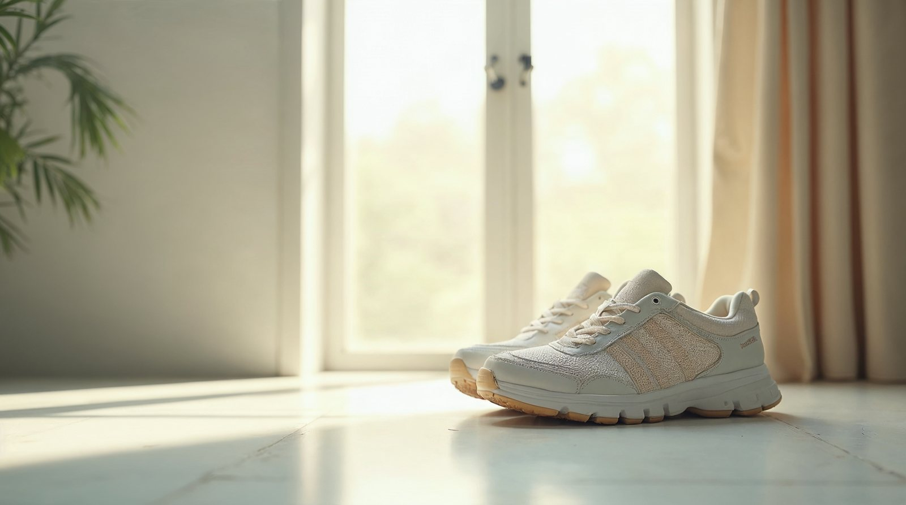
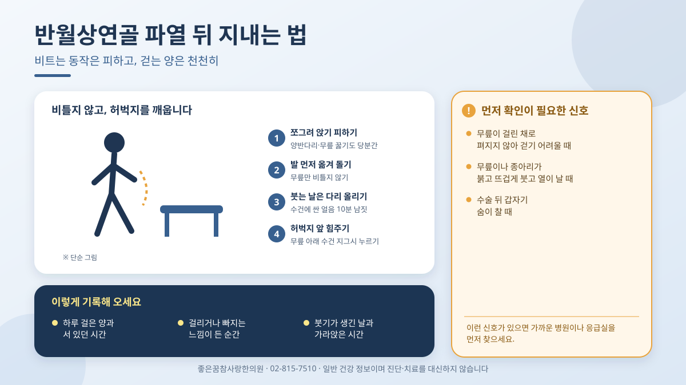

이종호 한의사 감수좋은꿈참사랑한의원 대표원장 (한의사 면허번호 19769)발행 2026-11-26 · 수정 2026-11-27
이 글의 차례
등산을 다녀온 다음 날, 계단을 내려가다 몸을 살짝 돌리는 순간 무릎 안쪽이 뜨끔해요. 그 뒤로 쪼그려 앉으면 안쪽이 찌르듯 아프고, 가끔은 무릎이 무언가에 턱 걸린 듯 잘 펴지지 않습니다.
MRI를 찍고 '반월상연골 파열'이라는 말을 들으면, 수술을 해야 하는지 그냥 지내도 되는지 머릿속이 복잡해지시죠. 이름부터 무섭게 들리니 그럴 만해요.
반월상연골은 무릎 안쪽과 바깥쪽에 하나씩 자리한, 초승달처럼 생긴 연골이에요. 허벅지뼈와 정강이뼈 사이에서 쿠션처럼 무게를 나눠 받고, 무릎이 흔들리지 않도록 붙잡아 주는 역할을 하거든요. 이 연골에 금이 가거나 찢어진 상태를 반월상연골 손상, 또는 파열이라고 불러요.
진료실에서 이 진단명을 듣고 오시는 분들은 크게 두 갈래예요. 운동하다 무릎을 비틀어 다친 젊은 분, 그리고 특별히 다친 기억 없이 쪼그려 앉기나 계단에서 조금씩 아파진 중년 이후의 분이요. 같은 이름이어도 생긴 사정이 다르니, 지내는 방법도 조금씩 달라져요.
뒤쪽이라면 먼저 안심부터 드릴게요. 오래 쓴 연골이 조금씩 닳고 갈라지는 건 원래 그래요. 그러니까 사실은 '연골에 금이 간 것'과 '무릎을 못 쓰게 된 것'은 다른 얘기예요. 사진에 '파열'이라고 적혀 있어도 그게 곧 무릎이 망가졌다는 뜻은 아니거든요.
어떤 경우든 치료 방향을 정하는 건 정형외과의 몫이에요. 수술을 할지, 주사나 약, 재활로 지켜볼지는 찢어진 모양과 위치, 무릎이 걸리는지를 보고 결정돼요. 저는 그 결정을 바탕으로, 그 사이와 그 뒤의 시간을 어떻게 보내면 좋을지를 함께 살펴요.
왜 반월상연골이 찢어질까요
무릎은 굽히고 펴는 동작에 더해 살짝 돌아가는 움직임도 함께 합니다. 체중이 실린 상태에서 무릎이 굽은 채로 몸이 비틀리면, 그 사이에 끼인 반월상연골에 강한 힘이 걸립니다. 축구나 농구, 스키처럼 방향을 갑자기 바꾸는 운동에서 다치는 경우가 이런 모양입니다.
나이가 들면 연골 자체가 조금씩 수분을 잃고 탄력이 줄어듭니다. 그러면 큰 충격 없이도, 쪼그려 앉았다 일어나거나 계단에서 몸을 돌리는 정도의 일상 동작에서 금이 갈 수 있습니다. 이런 경우를 흔히 퇴행성 파열이라고 부르고, 무릎 관절염과 함께 보이는 경우도 많습니다.
한의학에서는 무릎을 힘줄과 뼈가 모이는 곳으로 보았고, 이 부위가 오래 쓰이며 지치면 쉽게 붓고 시큰거린다고 여겨 왔습니다. 그래서 무릎만 보지 않고, 몸 전체의 회복력과 붓기를 다루는 힘, 잠과 피로까지 함께 여쭙습니다.
이런 모양으로 불편이 나타납니다
가장 흔한 것은 무릎 안쪽이나 바깥쪽 관절선을 따라 생기는 통증입니다. 무릎을 비틀거나, 쪼그려 앉거나, 양반다리를 할 때 아픈 쪽이 콕 찌르듯 아프다는 분이 많습니다.
다친 뒤 몇 시간에서 하루 사이에 무릎이 서서히 붓기도 합니다. 붓기가 가라앉은 뒤에도 많이 걷거나 오래 서 있은 날이면 다시 무릎이 빵빵하게 차오르는 느낌이 든다고 하십니다.
무릎이 무언가에 걸려 끝까지 펴지지 않거나, 움직이다 딸깍하며 걸렸다 풀리는 느낌이 들기도 합니다. 계단이나 경사길에서 무릎이 툭 빠지듯 힘이 풀리는 느낌을 말씀하시는 분도 있습니다. 이런 걸림은 찢어진 조각이 관절 사이에 끼는 경우와 관련이 있을 수 있어, 정형외과에서 치료 방향을 정할 때 중요하게 봅니다.
비슷해 보이지만 다르게 살펴야 하는 경우
무릎을 비틀어 다친 뒤 '퍽' 하는 소리와 함께 금세 크게 붓고 무릎이 흔들리는 느낌이 든다면, 연골과 함께 인대가 다쳤는지 확인이 필요합니다. 무릎 안쪽과 바깥쪽을 붙잡는 인대, 무릎 한가운데의 십자인대가 함께 다치는 경우도 드물지 않습니다.
무릎 안쪽 아래, 정강이뼈 위쪽이 아프고 계단 오를 때 콕 집히는 느낌이라면 힘줄이 붙는 자리의 문제일 수 있습니다. 관절선보다 조금 아래쪽이 아프다는 점이 다릅니다.
중년 이후에 양쪽 무릎이 아침마다 뻣뻣하고 자주 붓는다면 퇴행성 관절염을 함께 생각합니다. 실제로 관절염과 퇴행성 연골 파열은 함께 있는 경우가 많아서, 어느 쪽이 지금 불편의 중심인지 사진과 증상을 함께 놓고 봅니다.
무릎 뒤쪽이 불룩하게 튀어나와 당긴다면 무릎 뒤에 물주머니가 생긴 것일 수 있습니다. 연골 손상과 함께 생기는 경우도 있어 초음파로 확인해 보기도 합니다.

수술을 하든 하지 않든, 허벅지 근육이 중심입니다
반월상연골이 다친 무릎은 통증 때문에 덜 쓰게 되고, 그 사이 허벅지 앞쪽 근육이 생각보다 빨리 빠집니다. 다친 쪽 허벅지를 손으로 잡아 보면 반대쪽보다 말랑하게 느껴지는 경우가 많습니다.
허벅지 근육은 무릎이 받는 충격을 먼저 흡수해 주는 역할을 합니다. 이 근육이 약해지면 연골이 받는 부담이 다시 커지고, 붓기와 통증이 반복되는 고리가 생깁니다. 그래서 수술을 했든 지켜보기로 했든, 허벅지와 엉덩이 근육을 다시 세우는 일이 회복의 중심에 놓입니다.
수술을 받으셨다면 수술한 병원에서 정해 준 재활 단계와 체중을 싣는 시기를 먼저 따르셔야 합니다. 연골을 꿰맨 수술인지, 찢어진 부분을 다듬은 수술인지에 따라 무릎을 굽히는 각도와 걷기 시작하는 시기가 크게 다르기 때문입니다. 저는 그 일정표를 함께 보면서 그 안에서 할 수 있는 관리를 정합니다.

시기에 따라 살피는 것이 달라집니다
다친 직후 몇 주는 붓기와 통증이 가장 큰 시기입니다. 이때는 무릎을 무리하게 굽히거나 걷는 양을 늘리기보다, 붓기를 가라앉히고 무릎을 끝까지 펴는 범위를 지키는 것이 먼저입니다. 무릎이 살짝 굽은 채로 굳어 버리면 나중에 걸음이 어색해지기 쉽습니다.
붓기가 가라앉고 나면 근육을 다시 깨우는 시기로 넘어갑니다. 누워서 허벅지에 힘주기, 다리 곧게 들어 올리기처럼 무릎을 비틀지 않는 운동부터 시작해, 의자에서 앉았다 일어서기, 낮은 계단 오르기로 넘어가는 순서가 흔합니다. 한 단계를 넘어갈 때마다 다음 날 붓기를 확인해 보시면 됩니다.
그다음은 일과 운동으로 돌아가는 시기입니다. 오래 서서 일하시는 분은 중간에 앉을 자리를 마련하고, 운동을 다시 시작하시는 분은 방향 전환과 점프가 없는 것부터 고르시길 권합니다. 몸이 준비되기 전에 예전 강도로 돌아가면 다시 붓기가 올라오는 경우가 많습니다.
어느 시기든 반대쪽 다리와 허리도 함께 봅니다. 아픈 무릎을 감싸느라 한쪽으로 기울어 걷는 습관이 생기면, 몇 주 뒤에는 엉덩이나 허리 쪽 불편이 새로 생겼다고 말씀하시는 분이 적지 않습니다.
먼저 이렇게 여쭙니다
MRI 결과지와 정형외과 설명을 함께 펼쳐 놓고, 저는 대략 이런 순서로 여쭙니다.
- 언제, 어떤 동작에서 처음 아프셨나요? 다친 순간이 기억나시나요?
- 안쪽과 바깥쪽 중 어디가 찢어졌고, 수술 이야기가 있었나요?
- 무릎이 걸려서 펴지지 않거나, 툭 빠지는 느낌이 든 적이 있나요?
- 많이 걸은 날 무릎이 붓나요? 붓기는 얼마나 지나야 가라앉나요?
- 수술을 받으셨다면 언제였고, 지금 재활은 몇 단계인가요?
- 드시는 진통제나 소염제, 받으신 주사가 있나요?
다 기억하지 못하셔도 괜찮습니다. 결과지와 재활 안내문만 챙겨 오셔도 이야기를 시작하기에 충분합니다.

일상에서 먼저 해 볼 수 있는 것
무릎이 아프면 어떤 동작이 괜찮고 어떤 동작이 위험한지 몰라 아예 움직이지 않는 분이 많습니다. 정형외과에서 받은 안내가 있다면 그것이 먼저이고, 그 위에서 일상의 습관을 조금씩 손보는 것을 권합니다.
- 깊이 쪼그려 앉기, 양반다리, 무릎 꿇기는 당분간 피하고 낮은 의자를 활용하기
- 몸을 돌릴 때는 무릎만 비틀지 말고 발을 먼저 옮겨 몸 전체로 돌기
- 계단은 손잡이를 잡고 한 칸씩, 오를 때는 덜 불편한 쪽 다리부터 내려갈 때는 아픈 쪽 다리부터
- 붓기가 있는 날은 다리를 심장보다 조금 높게 올리고, 수건에 싼 얼음주머니를 10분 남짓 대기
- 누워서 무릎 아래 수건을 받치고 허벅지 앞에 힘을 주어 지그시 누르는 연습을 하루 여러 번
- 걷기는 평지에서 짧게 나눠 시작해, 다음 날 붓기가 없으면 조금씩 늘리기
자전거 타기나 물속 걷기처럼 무릎을 비틀지 않으면서 다리를 쓰는 운동이 편하다는 분이 많습니다. 다만 시작하는 시기와 강도는 수술 여부와 재활 단계에 따라 다르니, 다니시는 병원 안내를 먼저 확인하세요.
체중이 늘면 무릎 안쪽 연골이 받는 부담이 바로 커집니다. 무리한 식단보다 저녁 식사 시각과 간식부터 정리해 보시길 권합니다. 움직임이 줄어든 시기일수록 식사 리듬이 무너지기 쉽습니다.
한의원에서 함께 살필 수 있는 경우
- 정형외과에서 수술 없이 지켜보자는 말을 듣고, 그동안의 통증과 붓기가 신경 쓰이는 경우
- 수술과 재활 일정을 따르면서 무릎 주변 근육의 뭉침과 피로를 함께 관리하고 싶은 경우
- 아픈 무릎을 감싸느라 반대쪽 무릎이나 허리, 골반이 함께 뻐근해진 경우
- 무릎 통증 때문에 잠을 설치고 활동이 줄어 몸이 전체적으로 무거워진 경우
좋은꿈참사랑한의원에 처음 오시면 맥부터 짚고, 짚으면서 다친 경위와 정형외과에서 들으신 설명을 여쭙습니다. 그다음 무릎의 붓기와 열감, 굽히고 펴는 범위, 허벅지와 종아리 근육 상태를 확인합니다. 필요하면 초음파로 관절 주변의 물과 무릎 뒤쪽을 살핍니다.
그 뒤 진찰한 내용과 정형외과 치료 계획을 바탕으로 침, 약침, 온열 장비를 이용한 관리, 한약 상담 가운데 지금 상태에 맞는 것을 정합니다. 수술 직후나 재활 초기에는 무릎에 직접 힘이 가는 관리는 피하고, 주변 근육과 반대쪽 다리, 허리의 긴장을 살피는 쪽으로 범위를 정합니다. 정형외과 진료와 재활은 그대로 이어 가시는 것을 기본으로 합니다.
다시 오시면 맥을 다시 짚으며 지난번 정한 것 하나가 실제로 어땠는지부터 이어서 듣습니다. 허벅지 힘주기를 해 보셨다면 하루에 몇 번 하셨는지, 걷는 거리를 늘렸다면 다음 날 붓기는 어땠는지를 여쭙습니다.
이렇게 기록해 오시면 상담이 쉬워집니다
연골이 다친 무릎은 하루의 활동량에 따라 붓기와 통증이 오르내립니다. 2주 정도만 짧게 적어 보세요.
- MRI 결과지, 수술 기록이나 재활 안내문
- 하루에 걸은 양과 서 있던 시간
- 무릎이 걸리거나 빠지는 느낌이 든 순간과 그때의 동작
- 붓기가 생긴 날과 가라앉는 데 걸린 시간
- 드신 진통제나 소염제, 얼음찜질이나 운동을 한 시간
빠진 날이 있어도 괜찮습니다. 붓기가 유난히 컸던 날 전후로 무엇을 했는지부터 함께 들여다보겠습니다. 휴대폰으로 붓기가 있는 날 무릎 사진을 한 장씩 찍어 두셔도 좋습니다.

다친 무릎과 다시 걷는 길
반월상연골이 찢어졌다는 말은 무릎이 망가졌다는 뜻처럼 들리죠. 그런데 많은 분들이 수술을 하든 안 하든, 근육을 다시 세우고 무릎 쓰는 법을 조금 바꾸면서 일상으로 돌아가세요. 회복은 한 번에 오는 게 아니라 붓기와 통증이 오르내리는 사이에 조금씩 쌓이는 거예요.
무릎이 다친 뒤에는 몸보다 마음이 먼저 움츠러들기도 해요. 또 걸릴까, 또 빠질까 싶어 계단 앞에서 멈칫하게 되고, 그러다 보니 걷는 양이 줄고 근육은 더 빠지거든요. 저는 이 두려움을 조금씩 덜어 내는 것도 회복의 한 부분이라고 생각해요.
그래서 오늘 할 수 있는 만큼을 정해 두고, 그걸 해냈다는 기억을 하나씩 쌓아 가자고 말씀드려요. 크게 한 번이 아니라 약하게, 오래, 매일이에요.
잠도 함께 봐요. 무릎이 쑤셔 밤에 자주 깨면 낮의 피로가 커지고, 그만큼 통증도 더 크게 느껴지거든요. 잘 때 무릎 아래에 얇은 베개를 받치거나, 옆으로 누울 때 무릎 사이에 베개를 끼워 보면 편하다는 분이 많아요.
무릎과 몸을 살피는 건 제가 맡을게요. 대신 하나만 부탁드려요. 몸을 돌릴 때 무릎을 비틀지 말고, 발부터 먼저 옮겨 주세요. 딴 건 정형외과 재활 안내대로, 하시던 대로 하시면 돼요.
다음에 오시면 그 하나가 무릎에 어떻게 닿았는지부터 여쭐게요. 궁금한 건 그냥 편하게 물어보세요.
이런 증상은 먼저 확인이 필요합니다
- 무릎이 걸린 채로 펴지지 않아 걷기 어렵거나, 체중을 전혀 실을 수 없는 경우
- 수술한 무릎이 붉게 붓고 뜨거워지거나 열이 나는 경우, 한쪽 종아리가 갑자기 붓거나 숨이 차는 경우
이런 신호가 있으면 한의원보다 가까운 병원이나 응급실을 먼저 찾으세요.
함께 읽으면 좋은 글
- 계단에서 시큰하고 자주 붓는 무릎 퇴행성 관절염은 어떻게 살피나요?
- 무릎에 물이 찼을 때 초음파로는 무엇을 확인할 수 있나요?
- 무릎 뒤쪽이 불룩하고 당길 때 초음파로 무엇을 보나요?
- 50대에 계단을 오르내릴 때 무릎이 불안한 느낌이 들면 어떻게 대비하나요?
- 관절이 아플 때 초음파로 무엇을 확인하고, 무엇은 확인하기 어려운가요?

여쭙는 것
- 언제, 어떤 동작에서 처음 아프셨나요? 다친 순간이 기억나시나요?
- 안쪽과 바깥쪽 중 어디가 찢어졌고, 수술 이야기가 있었나요?
- 무릎이 걸려서 펴지지 않거나, 툭 빠지는 느낌이 든 적이 있나요?
생활에서 해 볼 것
- 깊이 쪼그려 앉기, 양반다리, 무릎 꿇기는 당분간 피하고 낮은 의자를 활용하기
- 몸을 돌릴 때는 무릎만 비틀지 말고 발을 먼저 옮겨 몸 전체로 돌기
- 계단은 손잡이를 잡고 한 칸씩, 오를 때는 덜 불편한 쪽 다리부터 내려갈 때는 아픈…
한의원에서 함께 살필 것
- 정형외과에서 수술 없이 지켜보자는 말을 듣고, 그동안의 통증과 붓기가 신경 쓰이는 경우
- 수술과 재활 일정을 따르면서 무릎 주변 근육의 뭉침과 피로를 함께 관리하고 싶은 경우
- 아픈 무릎을 감싸느라 반대쪽 무릎이나 허리, 골반이 함께 뻐근해진 경우
먼저 확인이 필요한 신호
- 무릎이 걸린 채로 펴지지 않아 걷기 어렵거나, 체중을 전혀 실을 수 없는 경우
- 수술한 무릎이 붉게 붓고 뜨거워지거나 열이 나는 경우, 한쪽 종아리가 갑자기 붓거나…
한눈에 보는 표
| 구분 | 핵심 |
|---|---|
| 여쭙는 것 | 언제, 어떤 동작에서 처음 아프셨나요? 다친 순간이 기억나시나요? 안쪽과 바깥쪽 중 어디가 찢어졌고, 수술 이야기가 있었나요? |
| 생활에서 해 볼 것 | 깊이 쪼그려 앉기, 양반다리, 무릎 꿇기는 당분간 피하고 낮은 의자를 활용하기 몸을 돌릴 때는 무릎만 비틀지 말고 발을 먼저 옮겨 몸 전체로 돌기 |
| 한의원에서 함께 살필 것 | 정형외과에서 수술 없이 지켜보자는 말을 듣고, 그동안의 통증과 붓기가 신경 쓰이는 경우 수술과 재활 일정을 따르면서 무릎 주변 근육의 뭉침과 피로를 함께 관리하고 싶은 경우 |
| 먼저 확인이 필요한 신호 | 무릎이 걸린 채로 펴지지 않아 걷기 어렵거나, 체중을 전혀 실을 수 없는 경우 수술한 무릎이 붉게 붓고 뜨거워지거나 열이 나는 경우, 한쪽 종아리가 갑자기 붓거나 숨이 차는 경우 |
자주 묻는 질문
반월상연골이 찢어지면 꼭 수술을 해야 하나요?
찢어진 위치와 모양, 무릎이 걸리는지 여부에 따라 수술을 권하기도 하고 재활로 지켜보기도 합니다. 결정은 정형외과에서 MRI와 진찰을 바탕으로 내리니, 들으신 설명을 진료 때 함께 알려 주세요.
찢어진 연골이 저절로 붙나요?
연골 바깥쪽처럼 혈관이 지나는 부분은 회복 여지가 있다고 알려져 있지만, 안쪽 부분은 그렇지 않은 경우가 많습니다. 다만 연골이 붙지 않더라도 근육을 세우고 무릎 쓰는 법을 바꾸며 불편을 줄여 가는 분이 많습니다.
수술 뒤에도 한의원 진료를 받아도 되나요?
수술한 병원의 재활 일정과 주의 사항을 함께 알려 주시면, 그 범위 안에서 주변 근육과 반대쪽 다리, 허리의 긴장을 살피는 쪽으로 정합니다. 수술 부위에 직접 힘이 가는 관리는 피합니다.
등산은 다시 할 수 있을까요?
붓기와 걸림이 가라앉고 허벅지 근육이 충분히 돌아온 뒤, 평지 걷기부터 거리를 늘려 가며 경사로를 더하는 순서를 권합니다. 내리막에서는 스틱을 쓰고 보폭을 줄이면 무릎 부담이 덜합니다.
좋은꿈참사랑한의원은 재진 때 지난번 이야기부터 이어서 여쭙니다. 진료시간과 예약은 오시는 길에서 확인하세요.
어디서 상담받을 수 있나요?
좋은꿈참사랑한의원은 서울 동작구 만양로2길 2 신성빌딩 3층·5층(서울 동작구 상도동, 7호선 상도역 3번 출구 근처)에 있습니다. 한의사 3명(이종호 대표원장, 조영기 수석진료원장, 정원영 진료원장)이 진료합니다. 진료시간은 평일 09:30~20:00(점심 13:00~14:00), 토·일·공휴일 09:30~15:00이며, 방문 전 전화로 확인을 권합니다. 예약은 네이버 예약, 카카오톡 상담, 전화 02-815-7510로 받습니다.
이 글은 일반적인 건강 정보이며 개인의 진단이나 치료를 대신하지 않습니다. 증상이 있거나 복용 중인 약이 있다면 진료를 통해 확인하세요. 치료 효과는 개인마다 다를 수 있습니다.
작성 기준: 일반적으로 알려져 있는 건강 정보를 참고해 정리했습니다(대표원장 감수). 증상 기록은 1~2주 동안 하루 1회, 비슷한 시간에 적어 오시면 지난 상태와 비교하기 쉽습니다.